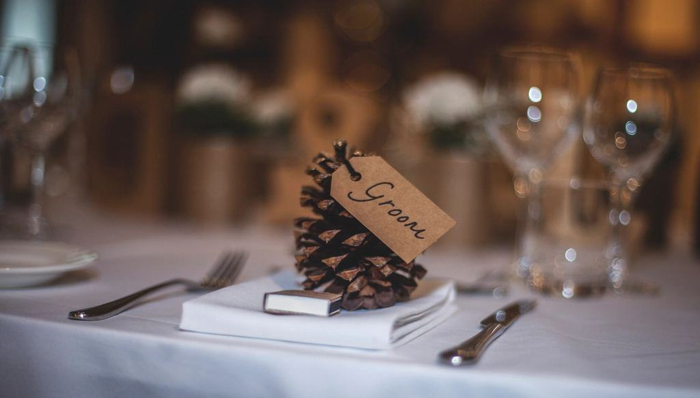

Röster från vintern
Vi var oroliga för att ett decemberbröllop skulle bli mörka, korniga bilder. Det blev det vackraste vi äger – och lokalen kostade hälften.
Ellen V.LångholmenOskar flyttade en ljusstake tio centimeter och plötsligt såg min farmor ut som en filmstjärna.
Nora S.SolnaSvartvita albumet ligger framme på soffbordet. Alla som kommer hem till oss bläddrar i det.
Isabelle K.Stockholm


Specialister på årets mörka halva
Rebecka Natt började som teaterfotograf på Södra Teatern och lärde sig där att arbeta med en enda ljuskälla och djupa skuggor. Sedan 2016 har hon fotograferat 210 bröllop, två tredjedelar av dem mellan oktober och mars.
- 21001 / 04
Bröllop sedan 2016
- 68 %02 / 04
Mellan oktober och mars
- 26per år03 / 04
Bröllop vi tar
- 1fotograf04 / 04
Samma på varje bröllop
Fyra steg mot er kväll
- 1

Skriv till oss
Berätta datum, plats och tid för vigseln. Vi räknar direkt ut solnedgång och blå timme för er dag.
- 2

Vinkväll i ateljén
Vi ses på Bondegatan en kväll, tittar på album och går igenom hur ljuset ser ut i er lokal.
- 3

Ljusvandring
Två veckor före går Rebecka och Oskar igenom lokalen i samma ljus som på bröllopsdagen.
- 4

Leverans
Galleriet kommer inom sex veckor, svartvita versioner ingår och albumet levereras efter er korrektur.

Det folk undrar om mörker
Hittar du inte svaret? Ring eller mejla oss.
01Blir bilderna inte för mörka?
De blir mörka där de ska vara mörka. Ansikten och detaljer är alltid ljussatta, och vi skickar gärna ett galleri från en liknande lokal före bokning.
02Fotograferar ni sommarbröllop?
Ja, ungefär en tredjedel av våra bröllop är på sommaren. Då lägger vi gärna porträtten efter klockan 21.
03Använder ni blixt under vigseln?
Aldrig i kyrkan eller under ceremonin. Blixten används bara vid porträtt i mörker och på dansgolvet.
04Hur många bilder får vi?
Runt 450–600 på en heldag. Vi väljer hellre färre bilder som håller än tusen nästan likadana.
05Kommer Rebecka själv?
Ja, alltid. Om hon skulle bli sjuk har vi ett avtal med två kollegor i Stockholm som arbetar i samma stil.
06Vad kostar vinterpriset?
Datum i november–februari och alla fredagar har 20 procent avdrag på paketpriset.
Från de senaste nätterna
 01
01Ellen och Viktor på Långholmen
Vigsel i fängelsets kapell klockan 17 och porträtt i snöfall längs kajen.
Läs mer 02
02Fyrahundra ljus i Ulriksdal
Ett nyårsbröllop där vi inte tände en enda lampa förrän dansen började.
Läs mer 03
03Vinterpris för 2027
Fredagar och datum i november–februari har 20 procent lägre pris på alla paket.
Läs mer
Fyra timmar eller hela natten
Skymning
Kvällsvigsel, porträtt i blå timmen och middagens början.
- Cirka 220 redigerade bilder
- Svartvita versioner ingår
- Ljusschema för dagen
- Leverans inom fyra veckor
16 900 kr4 timmarKolla datumHela natten
Mest bokatFörberedelser till klockan ett på dansgolvet.
- 450–600 redigerade bilder
- Ljusassistent hela dagen
- Platsbesök i rätt ljus
- Ateljékväll före bröllopet
32 500 krupp till 11 timmar, med ljusassistentKolla datumNatt och album
Heldagspaketet med handbundet album i svart linne.
- Allt i Hela natten
- Album 30 × 30 cm, 70 sidor
- Ett tryck 50 × 70 cm
- Två föräldraalbum
43 900 krheldag + svartvitt albumKolla datum
Moms ingår. Fredagar och november–februari: 20 procent avdrag.
När på dygnet gifter ni er?

En kväll i ateljén innan allt börjar
Vi träffas i ateljén på Södermalm, tänder ljusen och visar hur bilderna ser ut tryckta. Ni berättar om er dag, och vi berättar ärligt om ert datum passar vårt sätt att arbeta.

Folk tror att mörker är ett problem på bröllop. För mig är det första gången på hela dagen som jag kan bestämma var ljuset ska falla.